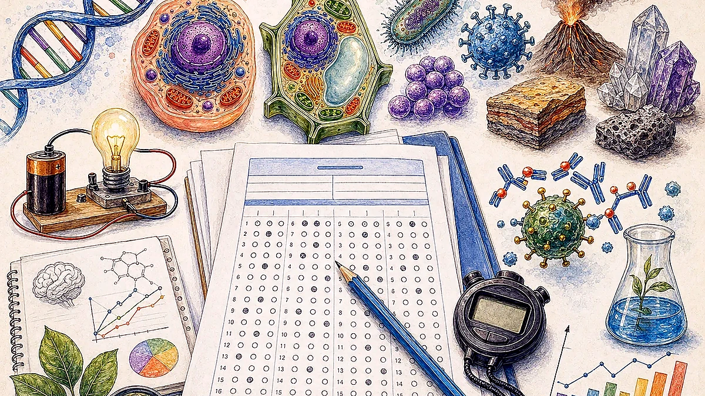
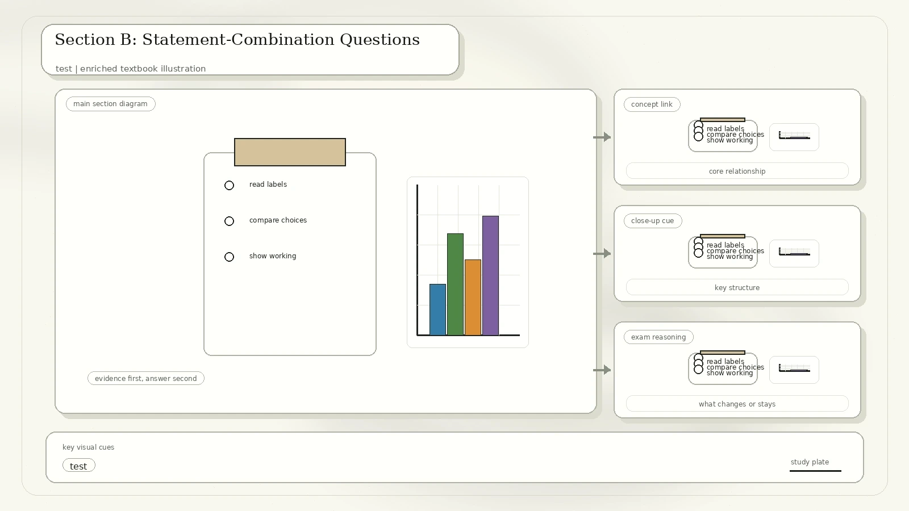

Paper Format
Section A has 30 one-point questions. Section B has 10 two-point questions. In Section B, each item gives three statements and the response pattern is: A = (1), (2), and (3); B = (1) and (2) only; C = (2) and (3) only; D = (1) only. No mark is deducted for a wrong answer.
Conversion note: diagrams have been summarized in words where the scan was image-heavy. Handwritten ticks in the scan were treated as practice annotations; explanations below use the science and calculations.
Section A: Core Reasoning Questions

| No. | Clean Question From The Scan | Best Answer | Reason |
|---|---|---|---|
| 1 | Water leaves three equal holes at different heights in a drum. Which diagram shows the situation? | A | Water pressure increases with depth, so lower holes shoot water farther. |
| 2 | Using a table of light and sound speeds in air, water, and glass, which statement is correct? | C | Light changes speed most when entering glass from air, so refraction is greatest there. |
| 3 | Kate reacts hydrochloric acid with sodium thiosulfate and measures cloudiness time under different conditions. What is the dependent variable? | B | The dependent variable is the measured result: time taken for the reaction mixture to turn cloudy. |
| 4 | Which diagram illustrates active transport across a cell membrane? | A | Active transport uses cellular energy to move particles across a membrane against the concentration gradient. |
| 5 | In a deep magma chamber at 100 MPa and 900 degrees C, how would water behave relative to its critical point? | B | Temperature and pressure are above the critical point, so water behaves as a supercritical fluid. |
| 6 | A bacterium lives in hot springs at 75 to 85 degrees C. Which graph best represents its enzyme activity? | D | A thermophilic bacterium should have enzyme activity peaking near the hot-spring temperature range. |
| 7 | Hot brass is dropped into cooler water with no heat lost to surroundings. The final temperature rises only slightly. Which statement is supported? | B | Water needs more energy than brass to raise the temperature of the same mass by 1 degree C. |
| 8 | Sodium acetate forms when weak acetic acid reacts with strong sodium hydroxide. What type of salt is it? | B | A salt from a weak acid and strong base is basic. |
| 9 | How does telomerase help cancer progression? | C | Telomerase maintains telomere length and bypasses the normal division limit, allowing repeated cell division. |
| 10 | Which statement about a lemon battery is correct? | C | Tomato can replace lemon because acidic fruit or vegetable juice can act as an electrolyte. |
| 11 | Four molecules are shown beside an enzyme. Which is the substrate? | A | The substrate is the molecule with a complementary shape to the enzyme's active site. |
| 12 | Hydrogen gas is tested with a flame and makes a pop. Why do water droplets form? | D | Hydrogen reacts with oxygen in air to form water. |
| 13 | A bat hears an echo after 0.1 s, then 0.05 s. What can it conclude about the prey? | C | The echo returns faster, so the distance to the prey is shorter. |
| 14 | One ball is dropped and one is launched horizontally from the same height. Which statement is correct? | D | Ignoring air resistance, both fall for the same time. The launched ball has extra horizontal motion, so the dropped ball is slower overall. |
| 15 | Benedict's stays blue; Biuret turns violet; xanthoproteic test turns yellow. What is the unknown? | B | It is a protein containing aromatic amino acids, with no reducing sugar detected. |
Section A: Applied And Diagram Questions

| No. | Clean Question From The Scan | Best Answer | Reason |
|---|---|---|---|
| 16 | What volume of a 24 g/L sugar solution contains 18 g of sugar? | C | Volume = mass / concentration = 18 / 24 L = 0.75 L = 750 ml. |
| 17 | Compare metal-marker patterns from a rock sample with known metals. Which metals are present? | B | The scan's pattern matches copper, gold, and aluminium. |
| 18 | Wind chime tubes differ in length and width. Longer and wider tubes have lower pitch. What order is possible? | C | Z is longest and has the lowest pitch; X is shortest and has the highest. W and Y trade length against width, so their order cannot be predicted from the given rule alone. |
| 19 | A graphite pencil trace has doubled voltage and exactly doubled current. What can be concluded? | A | Current proportional to voltage means it is behaving as an ohmic conductor under those conditions. |
| 20 | After eating sugar, a saliva pH graph drops below neutral. When is tooth decay most likely? | B | The mouth is most acidic from about 5 to 25 minutes. |
| 21 | Fractional distillation of liquids P and Q, with P boiling at 70 degrees C and Q at 103 degrees C. Which statement is correct? | A | The vapour near the top contains more of the lower-boiling, more volatile liquid P. |
| 22 | Compare copper, sodium chloride, and hydrogen chloride: lowest melting point, highest heat conductivity, and solid soluble in water. | B | Hydrogen chloride has the lowest melting point, copper conducts heat best, and sodium chloride is a water-soluble ionic solid. |
| 23 | A radioactive element has half-life 20 minutes. Starting with 100 g, how much remains after 1 hour? | A | One hour is three half-lives: 100 g to 50 g to 25 g to 12.5 g. |
| 24 | In a five-bulb circuit, which bulbs are on when only switch 3 is closed? | C | The closed path lights P, R, and T only, according to the scan's circuit connectivity. |
| 25 | What is observed in a Cartesian diver when force is applied to the rubber seal? | A | Squeezing increases pressure, more water enters the diver, its density increases, and it sinks. |
| 26 | Which picture shows a second-order lever? | C | In a second-order lever, the load lies between the fulcrum and effort. |
| 27 | A simple electromagnet doorbell diagram is shown. What happens when the switch is closed? | A | As drawn, the electromagnet attracts the steel rod so it hits the bell once; a complete make-break buzzer circuit is not shown. |
| 28 | Two parents have dominant hypercholesterolaemia; children with two mutant alleles rarely survive beyond puberty. What is the probability their third child is affected? | B | If both surviving affected parents are heterozygous, half their children are expected to be heterozygous affected. |
| 29 | In starch agar, holes contain amylase, amylase plus acid, gastric protease, and protease plus acid. Which gives the largest area without starch? | A | Amylase digests starch; acid or protease does not help starch breakdown in this setup. |
| 30 | A positively charged sphere is brought near a neutral metal sphere, which is then earthed. What is the final charge? | D | Electrons flow from Earth onto the nearby sphere, leaving it negatively charged while the original sphere remains positive. |
Diagram caution: Question 37 in Section B has a circuit diagram whose literal wiring appears ambiguous; the table below flags that point instead of hiding it.
Section B: Statement-Combination Questions
Use the scan's option pattern: A = all three statements, B = statements 1 and 2 only, C = statements 2 and 3 only, D = statement 1 only.

| No. | Question Focus | Best Answer | Reason |
|---|---|---|---|
| 31 | Polydactyly inheritance in a family tree. | D | The pedigree supports dominant inheritance. The chance statement and sex-linked statement are not both supported. |
| 32 | How fireworks produce different colours. | B | Excited electrons release light, and different elements or mixtures produce characteristic colours. Temperature alone is not the main explanation. |
| 33 | Energy forms in a candle-powered spinning paper spiral. | A | Chemical energy in the wax becomes heat, moving air, and kinetic energy of the paper. |
| 34 | A feather falls at constant downward speed. | C | Constant speed means air resistance equals weight and the resultant vertical force is zero; energy is still transferred to the air. |
| 35 | Why a heat-denatured enzyme no longer catalyzes its reaction. | D | The active site changes shape, so the substrate no longer fits. The enzyme is not used up and does not simply become a new useful enzyme. |
| 36 | Gold crown and pure gold brick in a balance lowered into water. | C | The crown and brick balance in air, so their masses match. In water, the less dense crown has greater volume and experiences greater upthrust. |
| 37 | Four bulbs and three switches in a circuit. | Review note | Reading the printed wiring literally suggests statement 2 only, but the option set has no "2 only" choice. Recheck this one with the teacher or original answer key. |
| 38 | Why water boils at a lower temperature at high altitude. | D | The key reason is lower atmospheric pressure at higher altitude. |
| 39 | Creating a genetically modified organism. | C | GMO creation is not ordinary same-species breeding. Recombinant DNA can transfer genes between very different organisms, and stable changes can be inherited. |
| 40 | Electromagnet strength with a variable resistor. | B | Greater current gives a stronger electromagnet; increasing resistance lowers current. A rheostat does not reverse polarity by itself. |
Answer Key
What To Revise After This Paper
Practise identifying trends, dependent variables, and proportional relationships before checking the options.
Revise ohmic conductors, electromagnets, switches, batteries, pitch, heat capacity, and energy conversion.
Review enzymes, food tests, active transport, inheritance, telomeres, and immune or genetic vocabulary.
Revisit volcano fluids, fractional distillation, salts, supercritical water, radioactive half-life, and atmospheric pressure.
Source converted from IMG_20260427_0037.pdf. All 40 scanned questions were represented in text, with answer reasoning added for revision.